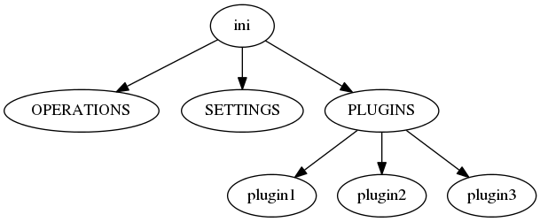

I originally wasn’t going to use validation since the documentation mentions needing to know the section names ahead of time, but I think this will still work, if the names are given. We’ll see.
The idea for the ape is that the top-level config will look something like:
[APE]
op1 = p1, p2, p3
o2 = p4, p5
It looks like the __many__ configspec variable might work. According to the documentation this will match any option it encounters that wasn’t explicitly defined in the configuration specification.
First I’ll create a fake ape configuration.
Validator([functions]) |
Validator is an object that allows you to register a set of ‘checks’. |
string_list |
ConfigObj([infile, options, configspec, ...]) |
An object to read, create, and write config files. |
ConfigObj.validate(validator[, ...]) |
Test the ConfigObj against a configspec. |
configuration = """
[APE]
operation_1 = plugin1, plugin2
operation_2 = plugin3
""".splitlines()
Now the configspec to match.
spec = """
[APE]
__many__ = string_list
""".splitlines()
config_spec = ConfigObj(spec,
list_values=False,
_inspec=True)
Warning
The list_values and _inspec arguments need to be set the way they are shown here. If they aren’t type-casting will work for basic python types (integers, floats, strings) but none of the list-based validators will work.
config = ConfigObj(configuration,
configspec=config_spec)
validator = Validator()
config.validate(validator)
for key, value in config['APE'].iteritems():
print "{0}: ({1}) {2}".format(key, type(value), value)
operation_1: (<type 'list'>) ['plugin1', 'plugin2']
operation_2: (<type 'str'>) plugin3
So, there’s a little problem here in that the validator didn’t recognize the list with one element as a list. Will force_list fix this?
force_list(value[, min, max]) |
Check that a value is a list, coercing strings into a list with one member. |
spec = """
[APE]
__many__ = force_list
""".splitlines()
config_spec = ConfigObj(spec,
list_values=False,
_inspec=True)
config = ConfigObj(configuration,
configspec=config_spec)
config.validate(validator)
for key, value in config['APE'].iteritems():
print "{0}: ({1}) {2}".format(key, type(value), value)
operation_1: (<type 'list'>) ['plugin1', 'plugin2']
operation_2: (<type 'list'>) ['plugin3']
This does seem to fix it and so would seem to be the better option for what I want to do.
My original thought was that the APE section would be kept for the plugin lists and there would be a separate section for other settings (perhaps called SETTINGS). But if validation is used, this might not be necessary. Let’s see.
Here’s the new configuration.
configuration = """
[APE]
# the settings
## modules is a list of external modules with plugins
modules = fakemod, othermod
# config_glob is a glob to find other configuration files to add to this one
config_glob = settings*.config
# repetitions is the number of times to repeat this configuration
repetitions = 100000
# subfolder is a place for output files
subfolder = output
# the plugins
operation_1 = plugin1, plugin2
operation_2 = plugin3
""".splitlines()
And the new configspec.
spec = """
[APE]
modules = force_list
config_glob = string
repetitions = integer
subfolder = string
__many__ = force_list
""".splitlines()
config_spec = ConfigObj(spec,
list_values=False,
_inspec=True)
config = ConfigObj(configuration,
configspec=config_spec)
config.validate(validator)
for key, value in config['APE'].iteritems():
print "{0}: ({1}) {2}".format(key, type(value), value)
modules: (<type 'list'>) ['fakemod', 'othermod']
config_glob: (<type 'str'>) settings*.config
repetitions: (<type 'int'>) 100000
subfolder: (<type 'str'>) output
operation_1: (<type 'list'>) ['plugin1', 'plugin2']
operation_2: (<type 'list'>) ['plugin3']
force_list(value[, min, max]) |
Check that a value is a list, coercing strings into a list with one member. |
string |
A collection of string operations (most are no longer used). |
integer |
So far, so good, but so what? The idea is that we get the sub-sections from the APE section and then validate them separately.
plugin_config = """
[APE]
op = p1, p2, p3
[[p1]]
plugin = Fake
ages = 12, 15
[[p2]]
plugin = Fake
ages = 10
[[p3]]
plugin = NotFake
age = 12
""".splitlines()
The APE configspec.
ape_spec = """
[APE]
__many__ = force_list
""".splitlines()
ape_config_spec = ConfigObj(ape_spec,
list_values=False,
_inspec=True)
The Plugin configspec.
plugin_spec = """
plugin = string
ages = float_list
""".splitlines()
plugin_config_spec = ConfigObj(plugin_spec,
list_values=False,
_inspec=True)
Now the configuration check.
config = ConfigObj(plugin_config,
configspec=config_spec)
config.validate(validator)
And the outcome.
ape_config = config["APE"]
for op_name, sub_sections in ape_config.iteritems():
print "OP name: ", op_name
for section_name in sub_sections:
#section = ape_config[section_name]
#plugin_name = section['plugin']
#ages = section['ages']
print " Section: ", section_name
#print plugin_name
#print ages
#print section.get_extra_values()
OP name: op
Section: p1
Section: p2
Section: p3
OP name: p1
Section: plugin
Section: ages
OP name: p2
Section: plugin
Section: ages
OP name: p3
Section: plugin
Section: age
So, that wasn’t what I wanted. It looks like config obj treats sub-sections the same as it does entries in the main section, so there’s no real way (using it like this) to differentiate the options in the APE section from the plugin sub-sections. In retrospect this seems obvious, given that all ConfigObj is a fancy dictionary.
The purpose of using the [APE] section with arbitrary lists of section-names was to be able to give the user a flexible way to order and identify the operations. In practice it never seems to go beyond one list, but since the APE already handles this, it seems a step back to abandon it to add ConfigObj. I considered three alternatives:
- Use restricted prefixes (e.g. [PluginIperf])
- Check attributes of sub-sections (e.g. look for ‘plugin’ option)
- Force an explicit sub-section tree structure (i.e. don’t consider the APE to be the root)
I think the best way is to remove the APE as a root section and just consider the entire ini file as the root.

So first a new-configuration matching the tree.
ape_config = """
[SETTINGS]
repetitions = 1
[OPERATIONS]
some_op = p1, p2
another_op = p3
[PLUGINS]
[[p1]]
plugin = Fake
ages = 1,2
[[p2]]
plugin = Fake
ages = 4
[[p3]]
plugin = NotFake
age = 12
""".splitlines()
And a new configspec for the sections.
ape_spec = """
[OPERATIONS]
__many__ = force_list
[SETTINGS]
repetitions = integer(default=1)
girth = float(min=0, max=12,default=6)
""".splitlines()
ape_config_spec = ConfigObj(ape_spec,
list_values=False,
_inspec=True)
Now the configuration check.
config = ConfigObj(ape_config,
configspec=ape_config_spec)
config.validate(validator)
And the outcome.
for op_name, sub_sections in config["OPERATIONS"].iteritems():
print "OP name: ", op_name
for section_name in sub_sections:
section = config['PLUGINS'][section_name]
plugin_name = section['plugin']
print " Section: ", section_name
print " Plugin: ", plugin_name
try:
ages = section['ages']
print " ages:", ages
except KeyError as error:
print " KeyError: {0}".format(error)
print configobj.get_extra_values(section)
OP name: some_op
Section: p1
Plugin: Fake
ages: ['1', '2']
Section: p2
Plugin: Fake
ages: 4
OP name: another_op
Section: p3
Plugin: NotFake
KeyError: 'ages'
[]
get_extra_values(conf[, _prepend]) |
Find all the values and sections not in the configspec from a validated ConfigObj. |
What may not be so obvious from the output was that this actually failed – I never used the plugin-configspec. One more time
for op_name, sub_sections in config["OPERATIONS"].iteritems():
print "OP name: ", op_name
for section_name in sub_sections:
section = config['PLUGINS'][section_name]
section.configspec = plugin_config_spec
try:
section.validate(validator)
except AttributeError as error:
print error
break
OP name: some_op
'Section' object has no attribute 'validate'
OP name: another_op
'Section' object has no attribute 'validate'
So, once again we have a problem. I can get the section but it’s a Section, not a ConfigObj object so it doesn’t validate.
for op_name, sub_sections in config["OPERATIONS"].iteritems():
print "OP name: ", op_name
for section_name in sub_sections:
section = config['PLUGINS'][section_name]
# cross your fingers
section = ConfigObj(section,
configspec=plugin_config_spec)
section.validate(validator)
plugin_name = section['plugin']
print " Section: ", section_name
print " Plugin: ", plugin_name
try:
ages = section['ages']
print " ages:", ages
except KeyError as error:
print " KeyError: {0}".format(error)
extras = configobj.get_extra_values(section)
for extra in extras:
print "option 'ages' in section '{1}' was specified instead as '{0}'".format(extra[1],
section_name)
OP name: some_op
Section: p1
Plugin: Fake
ages: [1.0, 2.0]
Section: p2
Plugin: Fake
ages: 4
OP name: another_op
Section: p3
Plugin: NotFake
KeyError: 'ages'
option 'ages' in section 'p3' was specified instead as 'age'